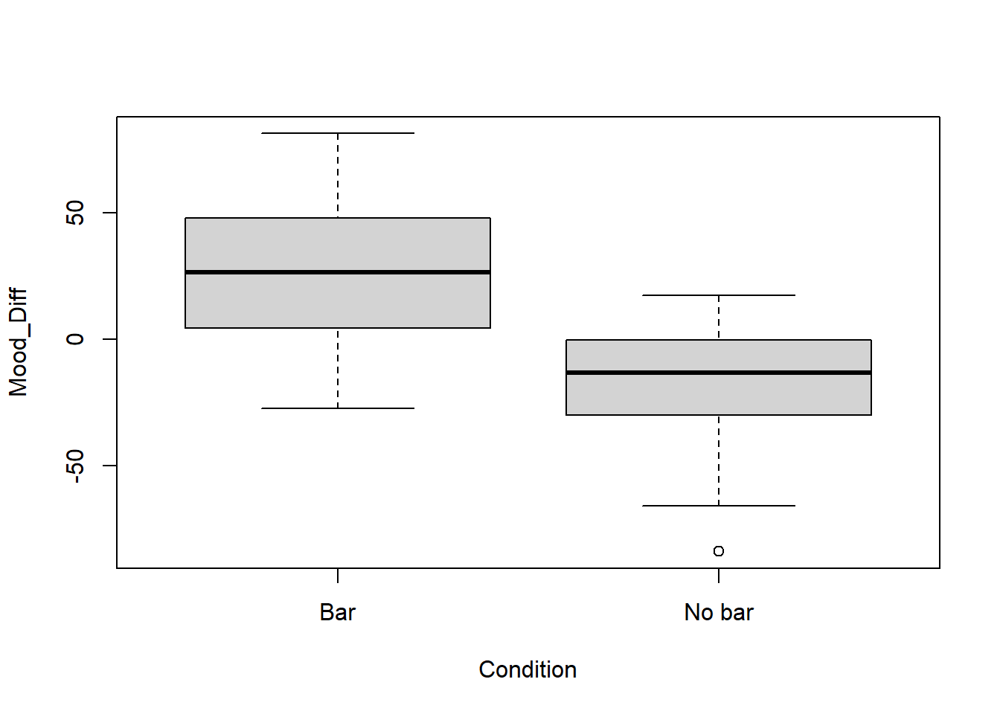

# install.packages("readr")
library(readr)Practical_2
INFS 2049 Experimental Design
Joshua Chopin
2025-01-09
(Student: Michael Hudson)
Last week’s practical was a bit unique in that it served as a return to programming in R. We very generally summarised and visualised a dataset to get a base understanding of the tools we will be using in this course. From now on, most practicals will follow a standard format, split into two parts. The first part will be illustrative examples of the concepts learned in the weeks course content. We will use one or more interesting datasets and show how the types of design you have learned can be implemented in R. In the second part of the practical you will receive a new dataset with a set of exercises for you to complete. For instance, this week we will learn the tools used to analyse independent and paired samples designs in R, using a separate dataset for each. Then you will be provided with a new dataset nand asked to use those tools to analyse the data.
Effect of breakfast on mood and memory
The first dataset we will be using today examines the effects of cereal bars for breakfast on mood and memory. Thirty two volunteers (16 male and 16 female, average age 22 years) were recruited and randomly assigned to two groups, one scheduled to have breakfast and the other to have no breakfast. In both testing sessions, volunteers rated various aspects of their mood using multiple visual analogue scales (e.g. Sad-Happy, Tense-Calm, Drowsy-Alert) displayed on a computer screen. An overall mood score was then derived for each participant. In addition, a free recall memory task was carried out during the second testing session.
Q. Does this experiment use paired or independent samples?
Going forward we will use a standard formula for analysing experiments such as this one. That is; load the data, summarise and visualise, perform statistical analysis and conclude on the findings. This leads us to a question though, what are we trying to find?
Q. Before reading on, what are two interesting hypotheses that we could form based on this experimental design? Define a null and alternative hypothesis for each.
The cereal bar dataset comes in the form of a .csv file so we will be using the readr package to load it. Hopefully your R installation already has the readr package from last week, but just in case, here is the installation command again, followed by the commands to load and inspect the data.
cerealdata <- read_csv("data_raw/cereal.csv")Rows: 32 Columns: 4
── Column specification ────────────────────────────────────────────────────────
Delimiter: ","
chr (1): Condition
dbl (3): Mood_Before, Mood_After, Recall
ℹ Use `spec()` to retrieve the full column specification for this data.
ℹ Specify the column types or set `show_col_types = FALSE` to quiet this message.head(cerealdata)# A tibble: 6 × 4
Condition Mood_Before Mood_After Recall
<chr> <dbl> <dbl> <dbl>
1 Bar 289. 298. 5
2 Bar 136. 196. 9
3 Bar 183. 167. 9
4 Bar 159. 132. 13
5 Bar 232. 253. 11
6 Bar 256. 259. 9summary(cerealdata) Condition Mood_Before Mood_After Recall
Length:32 Min. :120.1 Min. :112.5 Min. : 4.000
Class :character 1st Qu.:190.9 1st Qu.:178.2 1st Qu.: 6.000
Mode :character Median :231.3 Median :227.8 Median : 8.000
Mean :221.7 Mean :224.9 Mean : 7.844
3rd Qu.:251.8 3rd Qu.:264.8 3rd Qu.: 9.000
Max. :323.0 Max. :328.9 Max. :15.000 There are four columns in the dataset. First the condition column indicates whether the individual received a bar or not, the mood before and mood after columns give the individuals mood score before and after breakfast time and finally the recall column provides their recall scores. The summary command showed us that over all the participants, the mean mood score increased after breakfast. Lets think about how that increase could be explained. Perhaps -
- mood stayed the same for those without a cereal bar and got better for those with it.
- mood decreased for those without a bar, but got substantially better for those with a bar,
- having a cereal bar did not effect mood, and people just get happier in the afternoon in general.
all very reasonable hypotheses to make! Normally when designing such an experiment we would have a hypothesis in mind, hence the need for the exdperiment, and you have already taken a guess at what some potential hypotheses could be. Lets use the data to see if a hypothesis of a change in mood might be supported by this data. We will use a boxplot to get some idea of what the data looks like. First, I would like to add a new column to the dataset called Mood_Diff, which shows the difference in the before and after mood scores. Note that I have defined this variable as Mood_After-Mood_Before, meaning that positive values will mean the individual got happier and negative values will mean their mood decreased.
cerealdata$Mood_Diff <- cerealdata$Mood_After - cerealdata$Mood_Before
boxplot(Mood_Diff ~ Condition, data = cerealdata)
The boxplot makes it look pretty clear that those who had a cereal bar saw an increase in mood score. But is the difference statistically significant? That sounds like a good first hypothesis.
Null Hypothesis (\(H_0\)): Having a breakfast cereal bar does not effect mood score
\(H_0: \mu_0 - \mu_1 = 0\)
Alternative Hypothesis (\(H_1\)): Having a breakfast cereal bar does effect mood score
\(H_0: \mu_0 - \mu_1 \neq 0\)
where \(\mu_0\) is the mean of those who had a cereal bar and b\(\mu_1\) is for those who did not. To test this we use t.test from the base R installation. For a t-test with two independent samples like this one the function can simply take two arguments, \(x\) and \(y\) which represent the two samples being tested. There are several ways to separate our data appropriately. One way would be to identify which rows of our dataset correspond to individuals who had bars and which didn’t. We can do this using the which command, then call the t-test.
Wb <- which(cerealdata$Condition == "Bar")
Wnb <- which(cerealdata$Condition == "No bar")
t.test(cerealdata$Mood_Diff[Wb], cerealdata$Mood_Diff[Wnb])
Welch Two Sample t-test
data: cerealdata$Mood_Diff[Wb] and cerealdata$Mood_Diff[Wnb]
t = 4.2716, df = 29.509, p-value = 0.0001851
alternative hypothesis: true difference in means is not equal to 0
95 percent confidence interval:
23.35169 66.19435
sample estimates:
mean of x mean of y
25.58551 -19.18751 Alternatively, we can cut out the middle man, so to speak, and find these rows directly in the call to t.test
t.test(cerealdata$Mood_Diff[cerealdata$Condition == "Bar"],
cerealdata$Mood_Diff[cerealdata$Condition == "No bar"])
Welch Two Sample t-test
data: cerealdata$Mood_Diff[cerealdata$Condition == "Bar"] and cerealdata$Mood_Diff[cerealdata$Condition == "No bar"]
t = 4.2716, df = 29.509, p-value = 0.0001851
alternative hypothesis: true difference in means is not equal to 0
95 percent confidence interval:
23.35169 66.19435
sample estimates:
mean of x mean of y
25.58551 -19.18751 The output of the t-test tells us a number of things.
My Notes
https://docs.mathjax.org/en/latest/input/tex/macros/index.html
https://www.cmor-faculty.rice.edu/~heinken/latex/symbols.pdf